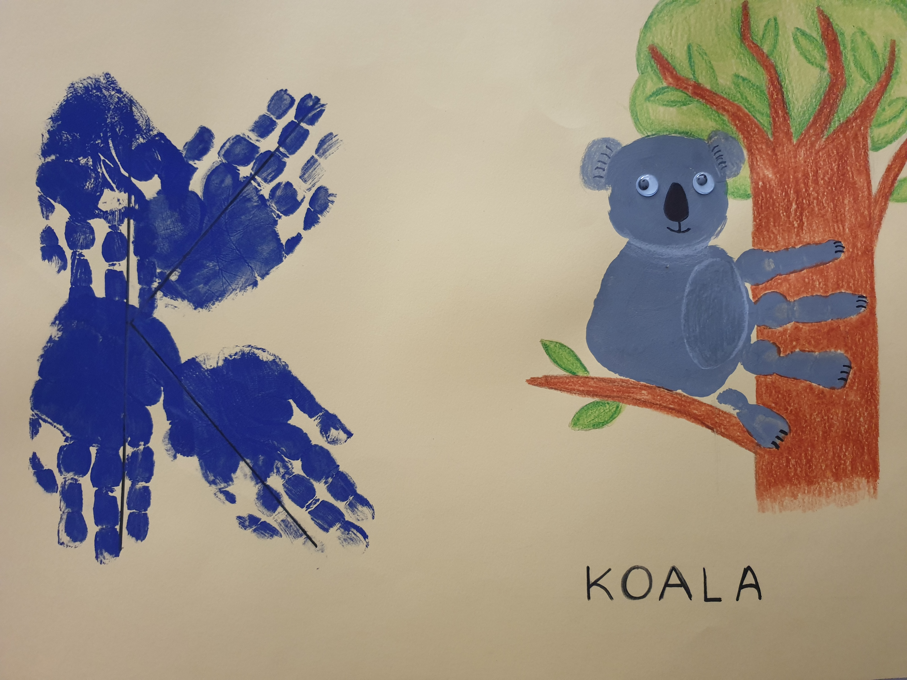
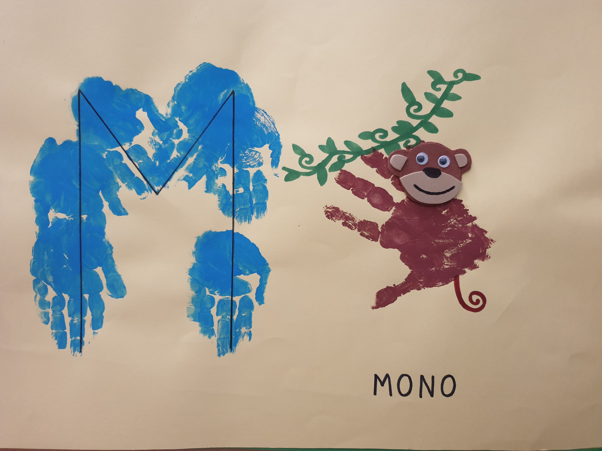

Periódico Escolar
Recomendaciones Lectoras
Emocionario. Di lo que sientes, es una enciclopedia de las emociones, un recorrido sentimental que podemos seguir encadenando una emoción con otra, empezando por la ternura y siguiendo por el amor, el odio, la ira, la irritación, la tensión, el alivio… hasta la gratitud. O podemos usar su índice y elegir la emoción que más nos interese en ese momento.
Edad recomendada: +5 años
Idioma: Castellano
El Cazo de Lorenzo es, sin duda, nuestra obra favorita de Isabelle Carrier, un álbum ilustrado cuya lectura consideramos imprescindible, especialmente si estamos decididos a tener una buena «biblioteca de sentimientos» para afianzar la inteligencia emocional de nuestros hijos.
Edad recomendada: 5 años
Idioma: Castellano
Libro de cartón con solapas de la editorial Usborne para que los más pequeños aprendan como funcionan los ordenadores y los fundamentos de la programación. Al ser un libro pop-up con más de 100 pestañas para descubrir contenidos, enganchará incluso a niños más pequeños de la edad recomendada.
Edad recomendada: a partir de 7 años (menos si están acompañados de un adulto).
Idioma: Castellano
Pequeños Artistas
 